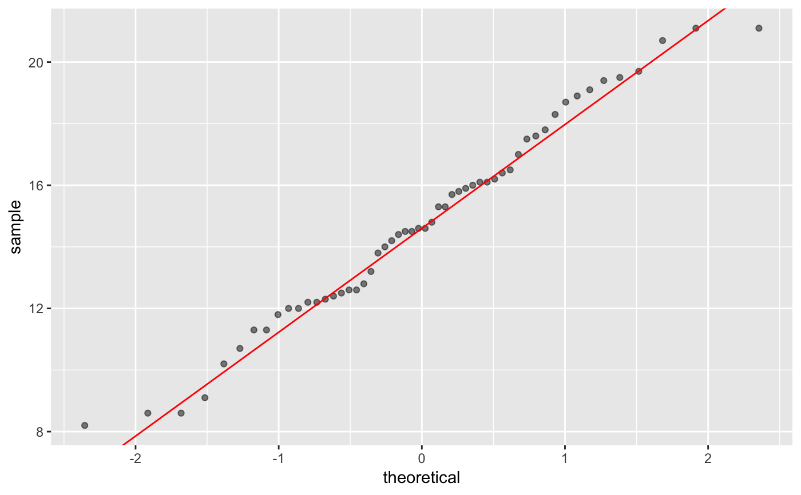
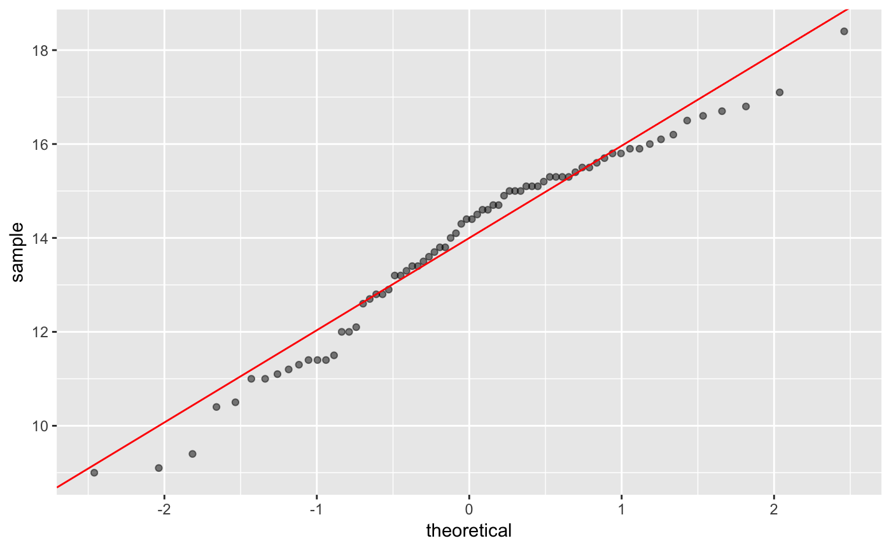
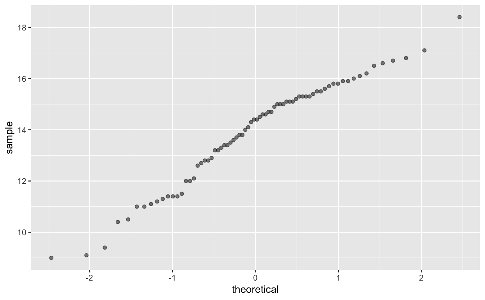

gg_qqplot.RdDessine le graphique des quantiles ou qqplot et la droite interquartile (passant par le premier et le troisième quartile à la manière de la fonction qqline) avec la bibliothèque graphique ggplot2.
gg_qqplot(df,var,qdist=qnorm,params=list(),qq.line=TRUE,color="red",alpha=.5)
| df | Un jeu de données (dataframe) |
|---|---|
| var | Le nom d'une variable de df |
| qdist | La fonction quantile d'une (famille de) distribution. Par défaut celle de la famille des lois normales. |
| params | Une liste de paramètres pour spécifier la loi à utiliser. Par défaut la loi normale centrée et réduite. Les paramètres peuvent être estimés avec la fonction |
| qq.line | Une valeur logique. Affiche ou masque la droite interquartile. |
| color | Le nom d'une couleur. Spécifie la couleur à utiliser pour la droite interquartile. |
| alpha | Indice de transparence. Spécifie la transparence à utiliser pour représenter les valeurs de l'échantillon. |
Un graphique utilisant la bibliothèque ggplot2. Affiche les valeurs des quartiles théoriques par lesquels passe la droite ainsi que son ordonnée à l'origine et sa pente si le tracé de celle-ci est demandé.
F. Bertrand, M. Maumy-Bertrand, Initiation à la Statistique avec R, Dunod, 2e, 2014.
glycine.blanche<-subset(Mesures,subset=(Mesures$espece=="glycine blanche")) gg_qqplot(glycine.blanche,"taille")#> 1st quartile : -0.674489750196082 #> 3rd quartile : 0.674489750196082 #> Intercept : 14.6 #> Slope : 3.37292004710024#bonus ajustement avec une autre loi (ici Student (car dist = qt) dont on estime les ddl) lauriers.roses<-subset(Mesures,subset=(Mesures$espece=="laurier rose")) shapiro.test(lauriers.roses$taille)#> #> Shapiro-Wilk normality test #> #> data: lauriers.roses$taille #> W = 0.96457, p-value = 0.04021 #>#pas issu d'une loi normale au risque alpha=5% gg_qqplot(lauriers.roses,"taille")#> 1st quartile : -0.674489750196082 #> 3rd quartile : 0.674489750196082 #> Intercept : 14 #> Slope : 1.96444793951992gg_qqplot(lauriers.roses,"taille",qq.line=FALSE)#essayons un qqplot avec une loi de Student# NOT RUN { require(MASS) params <- as.list(fitdistr(lauriers.roses$taille, "t")$estimate) #avec la droite gg_qqplot(lauriers.roses,"taille",qt,params) #essayons un qqplot avec une loi gamma params <- as.list(fitdistr(lauriers.roses$taille,"gamma")$estimate) #avec la droite gg_qqplot(lauriers.roses,"taille",qgamma,params) #essayons un qqplot avec une loi du chi-deux params <- list(df=fitdistr(lauriers.roses$taille,"chi-squared",start=list(df=5), method="Brent",lower=1,upper=40)$estimate) #avec la droite gg_qqplot(lauriers.roses,"taille",qchisq,params) # }